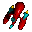

See the Puzzle Games section for Tetris and other puzzle type gamesApeiron 1.0.3
A much embellished clone of Centipede. During a port through the looking glass, the mirror shatters and your ethereal energy (you know, the stuff that allows you to get up and
go to work on a Monday morning...) is trapped within one of the crystal shards. Immediately, the residents of the mushroom patch sense
your presence. Lead by the Pentipede, this motley crew of mushroom patch misfits relentlessly hunt the crystal ( You! ), intent upon
sucking out the trapped energy. The Pentipede is a sinister creature that has the ability to divide. So, if you think your troubles are over
when you shoot this sneakered psycho once, you are twice as wrong.
License: Shareware, $15
Author/Publisher: Andrew Welch/Ambrosia
Modification Date: March 9, 2000
Requirements: 680x0 or PPC - Now works on USB Macs
A Tempest rendition. The object of ARASHI is to score points and advance levels. You advance levels by
killing all of the enemies. 'You' are the crawler. You move around the top edge
of a tube, or sheet. The player may move by use of the mouse or by use of the keyboard.
License: Freeware
Author/Publisher: Mike Zimmerman/Project Storm Team
A one or two player Asteroids-type game with four channel sound. You get to pick your ship from three different choices, each having
different strengths and weaknesses.
License: Shareware, $10
Author/Publisher: Michael Hanson/Arvandor Software
Barrack's goal is deceptively simple; there are a number of balls on the play field that are bouncing like a neurotic on a sugar rush.
Your job is to use your shooter to isolate them.
Mankind has been virtually wiped out by an extraterrestrial armada! Only you, piloting the
"Annihilator", can help save the solar system from ruthless alien domination. Bedlam 2 is a
fast action, arcade-style game with forty-five levels of blistering game play. As you blast
away at the invading forces, your ship moves along the bottom of the screen while you try to
avoid a barrage of enemy firepower, collisions with attacking ships and the occasional chunk
of floating space debris.
License: Shareware, $15
Author/Publisher: Ground Zero Software, Inc.
Modification Date: October 31, 1998
Requirements: PPC *highly* recommended, fast 68040 possibly acceptable
A different style of Breakout with more missiles, lasers and bonuses. This game will keep your mind busy with some hidden paths you will have to discover. There is a special
brick; after hitting it, you can fire at bricks (like in space invaders). It gets fun when you fire shots between hitting the ball with the paddle. Each level places the bricks in a
different pattern. You can also configure the speed of the ball.
Blood pong brings you a new concept of ball chasing fun. Not only can you
smack the ball around, you can kick your opponents butt with special combat moves.
License: Shareware, $19.95
Author/Publisher: Brandon Koruda/Monkey Byte Development
There exists a nether region, between the matter and antimatter universes, known as the Void. This Void protects both universes from colliding together and wiping everything out of existence. The constant shifting of the Void produces balls of energy called Boogas. If too many Boogas collect in a sector, they will create a rift in the Void and collapse it. You have been chosen to become the "boogalooper", a cross between protector of the universe and a cosmic janitor. Your mission is to eliminate the destructive Boogas. It won't be easy, because the dastardly Spaztix and the crazy Rat Bassards are standing in your way!
Do you know 'Bubble Bobble', the classic arcade game also available for C64, Atari ST or Amiga? Well, Bub & Bob is a 90% clone of it. You are a little green or blue dinosaur and catch your enemies in bubbles you can shoot. If you let them burst with your back thorns they become fruits. There are many extras to enhance your abilities like fast shots or speed up.
The best feature of the game is that two players can play together.
Yes, it's squish or be squished -- and there are plenty of would-be squishers just waiting for you to
get your feet wet: Piranha and starfish and eels, oh my! But don't worry little fishy, there are plenty
of power-ups and goodies you can hook your fin onto to give you a bit of an edge.
License: Shareware, $15
Author/Publisher: Alex Metcalf & David Waring/Ambrosia
The Bugdom was once a peaceful place ruled by the Rollie Pollies and the Lady Bugs, but not long ago the Bugdom was
overthrown by the clan of the Fire Ants. After recruiting other bugs to help fight for them, they captured all of the Lady Bugs
and are holding them prisoner. The leader of the Fire Ants, the new king of the Bugdom, is King Thorax. Once he is defeated,
the Bugdom will return to the peaceful place it used to be.
License: Demo, $37.95
Author/Publisher: Pangea Software
Modification Date: February 28, 2001
Requirements: Bugdom will run on any PowerPC 603 or 604 Mac which is at least 200mhz and has an ATI 3D accelerator card,
G3 preferred, Mac OS 8 or better
Cobra Gunship is a side-view scroller helicopter game in the style of classics like Choplifter and Armor
Alley. This is no mere remake, however. Cobra Gunship is a completely new game, taking advantage of fast
processors and fast video to provide an immersive, explosive gaming experience.
Colibricks is an exciting brick game for the Macintosh. As in other similar
brick games, the goal is to destroy the bricks on the screen using one or more
balls. But for the first time in brick game history, these balls actually behave
like real balls! When a ball hits the corner of a brick, it doesn't just go back
in the direction it came from. Instead, the exact point of impact is calculated,
and the ball bounces off the corner just like a real ball would. Balls also
collide with each other, again using precise mathematical formulas.
In Cro-Mag Rally you are a speed-hungry caveman named Brog who races through the
Stone, Bronze, and Iron Ages in primitive vehicles such as the Geode Cruiser,
Bone Buggy, Logmobile, Trojan Horse, and many others . Brog has at his disposal
an arsenal of primitive weaponry ranging from Bone Bombs to Chinese Bottle
Rockets and Heat Seeking Homing Pigeons. In addition to single-player racing
where one player races against the computer, there are also several different
multi-player modes including Tag, Capture the Flag, and Survival. Two players
can play on a single computer in split-screen mode, or up to 6 players can play
over a network. Cro-Mag Rally is an incredibly diverse and entertaining
racing game, and there is nothing else like it for the Macintosh! The game is
visually stunning, has incredibly fun driving physics, and is suitable for all
ages.
License: Demo, $39.95
Author/Publisher: Pangea Software
Modification Date: August 28, 2001
Requirements: PPC, 233 Mhz or faster, Mac OS 8.6 or higher and Mac OS X
A Centipede-like game. Firefall is a very addictive aracade game that was originally published in 1993. The game has now been re-released as shareware
and has been updated to work better on new machines.
As the last of the free Habnabits, Ferazel must fight for the survival of his race, and wrest the control of ziridium
from the filthy talons of evil. Journey across the seven lands of Teraknorn to the perilous Great western desert. Increase
Ferazel's skill, stamina, and magic repertoire and avenge your Habnabit brethren. Anything less would amount to betrayal.
Frog Xing is a well-paced arcade game in which you guide a frog across a highway and a river to dock on the other side. You can
catch bonuses along the way to score extra points.
Frog Xing has a nostalgic look to it, with a tip of the hat to the classic arcade games. With both traditional and new sound effects and a hopping music
score, the gameplay is addictive and should be fun for both novices and arcade experts. Even children will enjoy watching and helping the frog cross
to the other side.
Galactic Patrol is a new 3d homage to the classic arcade hits of the early 80's.
The look and spirit of such legendary games as Space Invaders, Galaga, Phoenix,
and Galaxian pulse through Galactic Patrol's 25 levels in over 300 waves of
shoot 'em up fun. Reflex-burning top view action, frenzied side scrolling , and
comin' right at ya' rear views are all here in this retro-styled alien invasion.
Join Harry the Handsome Executive as he scoots and kicks his swivel chair through the
halls of ScumCo in this delightful action game developed by Ben Spees. The path to job
security is fraught with many perils! Harry must avoid discomfort caused by dart-throwing
middle managers, rebellious customer service drones, crazed chemists, and a host of other
enemies. All the while, he must maintain corporate favor or risk the feared pink slip.
Jazz 2 proves that the rumors of the platform game genre's demise are greatly
exaggerated.Within Jazz 2, there are blocks that can be shot by various
weapons. If a block has a star on it, Jazz can destroy it with any weapon. But,
there are other blocks in the game: blocks with an exclamation mark on them must
be stomped by Jazz's butt in order to be broken open; blocks with an ammo type
depicted on them can only be destroyed by the corresponding weapon. This
introduces an element of strategy requiring ammo conservation and treasure
hunting.
Koji the Frog is an arcade game in which you, as a frog, have to shoot your tongue and jump to catch
insects (flies, bees, and ladybugs) while you avoid a snake, lightning, mad bees and a gopher (with
dynamite). Help comes in the form of a butterfly that appears at 20,000 points. If you eat it, the tongue
gets longer and your jumps higher. It features fast, custom designed graphic routines and multichannel
sound.
MacAttack plays similar to the Arcade classic "Tempest". It's a fast-paced, addictive shoot-em-up game that's fun for
people of all ages. It has 30 levels and dozens of foes. You can play only 3 levels until you register.
Using a ball and a paddle, bash all of the bricks out of a wall to
complete the level. Try to advance through all of the levels to win the game. Along the way, catch falling capsules to gain
(or possibly lose) special powers. Watch out! Evil bubbles can deflect the ball and foil your efforts.
A great souped up version of the classic Asteroids. This Macintosh classic is what put Ambrosia on the map as the leading Macintosh shareware publisher.
The dreaded Maelstrom is a dangerous asteroid belt within which you must skillfully pilot your spacecraft.
Mars Rising is a vertically scrolling arcade game for Power Macintosh computers, featuring 28
levels of joystick-thrashing action. Pilot your squadron of VacFighters in solo missions above
the Red Planet, or team up with another pilot and compete against each other for fun, glory and
fabulous prizes. Power up your VacFighters with inflight wepoons upgrade modules, and unleash some
destruction on the war mongering Martian regime!
License: Shareware
Author/Publisher: David Wareing/Ambrosia
Modification Date: June 16, 1998
Requirements: PPC, System 7.5.5 or better, Joystick Recommended
The meat, already warm, grows new strains of controlling bacteria which
quickly take over the meat and begin to attack you! But you, without fear,
seize your SUPER-DUPER-ULTRA bottle and begin to fire away!
Mighty Mike is the game formerly known as Power Pete which was originally published by MacPlay back in 1995. Now that we
have reacquired the rights to the game, we have decided to re-release it as shareware for only $15. Even though Mighty Mike is 5
years old, the game is still as good today as it was when it was first released. It's one of those games that stands the test of time
extremely well.
Take original, plain vanilla Pong, add the following features, shake vigorously and you get Mortal Pongbat:
1. Really cool graphics and effects
2. Neato nifty sounds
3. A beam weapon to burn holes in the other guy's paddle
4. Autonomous Mines bouncing around the field endangering your very existence as a player
5. Multiple brightly colored pucks
6. Pods that block and bounce the pucks, and contain prizes for you to get
7. Prizes (as mentioned above) like: Invincibility, More Pucks, Bigger Beam, Fix Shield
8. Two person play, as well as person vs. computer play.
The story behind Nanosaur is that you are a dinosaur (a Nanosaur to be exact)
from the future who has traveled back in time to collect the eggs of 5 dinosaur
species before the giant asteroid hits the earth. The "primitive" dinosaurs will
attack you as you try to get their eggs, but just remember that it's for their own
good that you blast them into oblivion!
License: Shareware, $15
Author/Publisher: Pangea Software
Modification Date: October 20, 2000
Requirements: PPC, ATI 3D card, 4mb of VRAM or 2mb of VRAM if you get the 2nd file
Direct Download
File Size: 13,897 Kb - 1.3.4 installer
Direct Download
File Size: 902 Kb - 1.3.4 updater
Direct Download
File Size: 898 Kb - 1.3.4 updater for 2mb of VRAM - You need to replace the application installed by the file above if you only have 2mb of VRAM
Direct Download
File Size: 13,010 Kb - Nanosaur Extreme 1.3.2
Home PageNetTower 1.3
NetTower is a game that I based off of NSTower and has the same objective of
climbing as high as possible in a tower. That game was really cool, but it lacked
a few features. The game was single player only, and the game play got boring
really fast due to not enough randomness/extras. I have fixed some of those flaws
by adding new platforms, items, and multiplayer. It can also be customized by
plugins to make it look cooler or by music which adds to the gameplay.
Pac the Man is a simple Pacman clone for the Mac. It has nice graphics close to the original ones and good music.
The gameplay is equal to the original: Escape the ghosts and eat the pellets.
Super pellets give you time to catch the ghosts.
Patriot Command is an implementation of a (once) popular arcade
classic. The object of the game is to protect world cities from an
onslaught of ICBMs and other nasties that an unnamed whimsical
fascist dictator decided to launch against the world. The worlds only
defenses are three Patriot missile silos which you command. Each
Patriot missile is capable of creating an explosion large and powerful
enough to destroy any enemy objects that are engulfed by it.
Sentinels of Ceth is a fast paced arcade blaster. Use your ship to protect your Gems from being stolen. You will need a bit of planning to purchase the right equipment for the job. Brains and skill are the only requirements to play.
Slide Luther through the rocky maze, while eating other snakes, rodents, birds, and other yummies. Avoid getting eaten, and
protect your eggs from other animals.
Psychologists say that the limbic system controls the basic instincts for survival: feeding, fighting, self-preservation, and
reproduction. Now there's a game that taps directly into these primal instincts: Slithereens, the new wise-crackin', snake-slidin'
game from Ambrosia Software.
Space Debris is a clone of the classic game Crystal Quest by Patrick
Buckland. It features very similar gameplay with larger sprites and
640x480 play. The game idea is simple: move your ship around the screen
grabbing the glowing crystals, and escape through the gateway at the
bottom of the screen, at the same time avoiding being hit by any of the
enemies that may appear. Scattered around the screens you will also find
Mines, which must be avoided at all costs.
Triple-A is a modern shareware arcade action game in the spirit of such classics as "Suicide" and "Airborne!".
You are a gunnery officer in command of a lone anti-aircraft artillery (AAA) battery, tasked with defending the frontier of your country against
invasion. The enemy will likely attack you with an aerial onslaught including paratroopers, special forces, and combat engineers. You must use your
anti-aircraft weaponry to stave off wave after wave of enemy assaults and buy time for additional supplies to reach your position and bolster the
defense. With time, your somewhat antiquated equipment will be replaced by increasingly sophisticated and deadly air defense weaponry. How long can
you survive?
Direct Download
File Size: 1957 Kb
Direct Download
File Size: 1295 Kb - sound and sprite files for beta version if you don't already have version 1.5.1 or earlier
Home Page

The Zone 1.5.1
TheZone is a two dimensional inertial space arcade. If you like to drive a
ship throughout open space, this is the game for you. Thrust your ship,
destroy asteroids, collect all bonuses, blast out space bases (keep your eyes
on the red ones) and bang out enemy vessels. Practically everything bounces
around because you are moving in a physical space: all objects are solid, and
love to collide with each other. Forget about boring battles against stupid
asteroids; you will have enemies around chasing ya down!